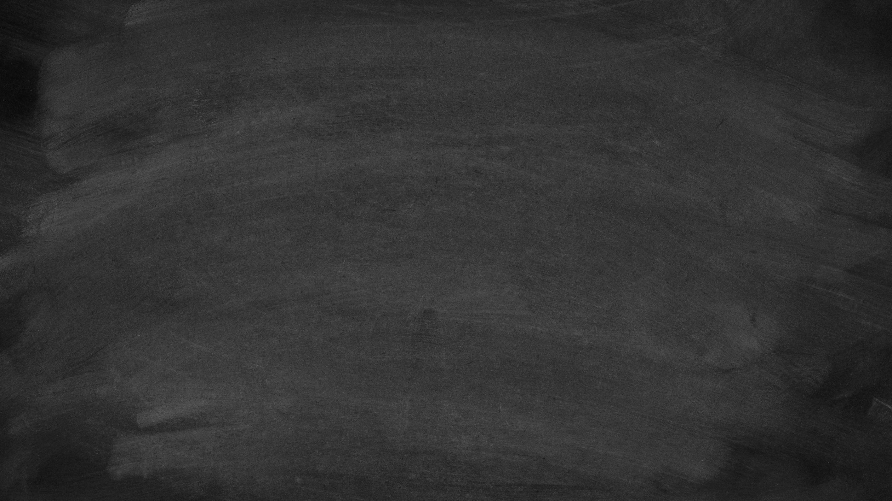
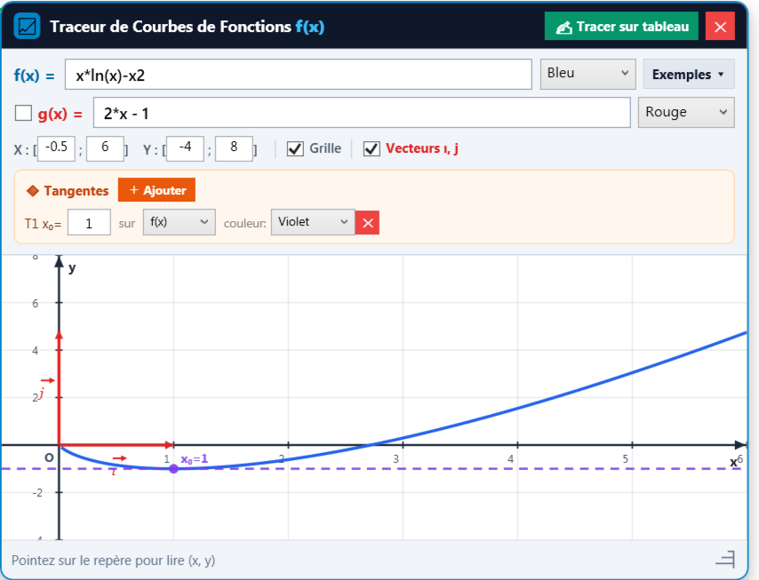

Transformez vos cours en présentiel et à distance. Profitez d’un tableau blanc et noir ultra-fluide avec stylet réaliste, traceur de courbes géométrique, émulateur Casio fx-991ES, et simulateurs de physique-chimie.


Tracé automatique de tangentes, asymptotes, et gravure instantanée sur le tableau en 1 clic.
Fini les logiciels complexes et inadaptés. SoltaniBoard réunit sur un seul écran l'ensemble de votre boîte à outils pédagogique.
Basculez en un clic entre le Tableau Blanc pur, le Tableau Noir classique avec cadre en bois d’école, ou le quadrillage millimétré pour les figures.
Tracez $f(x)$ et $g(x)$ instantanément avec repère orthonormé réglable, vecteurs unitaires $(\vec{\imath}, \vec{\jmath})$, tangentes au point $x_0$ et découpage strict.
L'émulateur officiel Casio reste au premier plan (Always on Top) pendant que vous écrivez avec le stylet, idéal pour projeter les calculs aux élèves.
Règle graduée, Équerre, Rapporteur d'angles et Compas pour tracer arcs et cercles au millimètre près avec accroche magnétique automatique.
Simulateur interactif pour schématiser les montages d'optique, de chimie (burettes, béchers) et circuits électriques avec oscilloscope virtuel.
Travaillez avec deux pages côte à côte (énoncé à gauche, correction à droite) et exportez l'intégralité de votre cours en PDF vectoriel net et lisible.
Développé spécifiquement pour les enseignants de mathématiques :
Profitez d'un tarif transparent et d'une sécurité totale avec verrouillage machine.
Le support officiel est à votre disposition directe sur WhatsApp pour répondre à vos questions, assister à l'installation ou générer votre clé de licence.